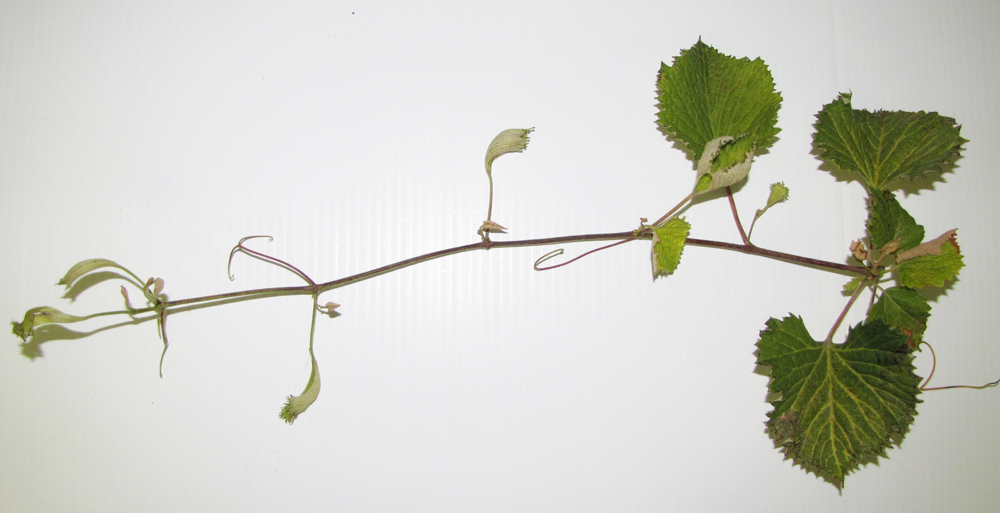
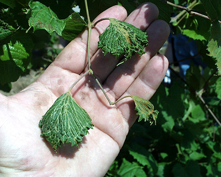

An agricultural powerhouse:
Soybeans are one of the most cultivated crops in modern agriculture, of which almost 400 million metric tones were harvested in 2024 [1], useful for their protein and oil products which feed most of the world. In fact, Brazil is the main producer of soybean in the world, producing about 42% of the global supply, with the South and Southwest regions producing most of the country’s crop. In Rio Grande do Sul, the state with the 4th biggest harvest of soybeans in Brazil, many municipalities depend on its production to fuel their economies [2], and for that reason, farmer and harvest efficiency of soybeans is paramount.
In order to have a successful plantation of soybean, weed control is of the utmost importance, as they actively compete for nutrients, thus starving the plantation and reducing its efficiency drastically [3]. Therefore, eliminating such weeds ensures that the plantation establishes itself in a clean environment, preserving the yield potential of the crop. As such, 2,4-Dichlorophenoxyacetic acid, a weed targeting herbicide, is frequently applied with the aim of eliminating any weeds that might compete with soybeans in plantations, as it is a highly effective and inexpensive agrochemical [4].
Thus, incorporating this herbicide to properly manage soybean production in the state has been an important issue to maintain competitiveness and profitability with the plantations. However, the value of this herbicide depends on how its application is executed, as the incorrect application of highly volatile herbicides can cause insurmountable damage to the environment and other plantations.
The cost of Drifting away:
The economical dominance of soybean across the Campanha region of Brazil, a relatively new and prestigious wine-producing area situated in the South of the country, between Uruguay and Argentina, stands in conflict with traditional and emerging fruit cultures, notably the culture of grapevines, or viticulture [5]. As the peak application period for 2,4-D to clear weeds in soybean fields coincides with the sprouting and budding stages of grapevines, vineyards face the risk from the drift of 2,4-D at their most vulnerable moments [5]. Furthermore, the herbicide can travel distances ranging from 20 to 30 kilometers or more from its original point of application, resulting in contamination of viticultures across entire cities [5].
Grapevine cultures are extremely sensitive to 2,4-D, as even trace amounts carried by the wind can trigger physiological degradation in the plants [6]. Once contaminated by the herbicide, the deformities manifest as predictable injuries: curled leaves, twisted stems and ceasing of the plant's vascular development [6].
The recurring nature of 2,4-D drift has brought significant economic damage to vineyards in Rio Grande do Sul, with reports detailing crop losses of up to 80% in certain affected areas [7]. The financial toll extends past small family farmers to major prominent operations, as well-known vineyards, such as those owned by famous Brazilian sports commentator Galvão Bueno, have together suffered millions in damages due to 2,4-D and other herbicide residues [8].
The continuous pressure of such losses has placed local viticultures in a state of crisis, discouraging future investments [9]. The persistent threat of drift has driven viticulture owners to reduce operations or abandon viticulture entirely, threatening the long-term viability of a region that distinguishes itself as a premium wine-producing hub in Brazil and the world.
While viticulture bears the most visual and severe damage, 2,4-D drift affects a broad range of high-value crops introduced to diversify the region's economy. Olive orchards, nut farms, apple orchards, and diverse vegetable crops across RS have reported massive setbacks [10]. Olive growers who anticipated over a million liters of olive oil saw production drop sharply to 600,000 liters in 2023, falling even further to just 192,000 liters in 2024 due to the recurring impact of chemical drift [7]. This constant disruption demonstrates that the current application practices of the soybean industry threaten the viability of sustainable agricultural diversification across the Campanha region.
The ongoing crisis has led to legal and regulatory friction between environmental bodies, affected producers, and soybean cultivar owners [7]. Although the public ministry and courts have attempted to implement bans or tight restrictions on the herbicide, state authorities frequently face immense pushback from large-scale grain producers citing immediate economic losses if the chemical is pulled.
State organised and mandated qualification courses with the purpose of teaching correct application practices have failed to stop the drift, primarily due to insufficient field inspection and a frequent disregard for weather variables like wind speed and temperature by operators [11]. Even newly proposed regulatory measures, such as local exclusion zones, are criticized as band-aid fixes that fail to solve the root issue of the volatilization of the compound, which travels across the Campanha region unimpeded.
Reading the signs in grapevines
Explore two published examples of grapevine injury attributed to 2,4-D.

Photo: John Strang · University of Kentucky. View source.

Photo: Mike White · University of Minnesota Extension. View source.
Fighting the Drift:
Owing to the vastness of the impact of 2,4-D drift in Brazil, specially in its Campanha region, the subject matter has frequently been raised as a heavy topic of discussion by agricultural producers of affected cultivars. Therefore, the history of the regulation of 2,4-D and other synthetic and auxin herbicides in Brazil is not brief. In 2019, following a toxicological reassessment process, the Brazilian Health Regulatory Agency (ANVISA), in charge of regulating the use and selling of 2,4-D, chose to maintain the commerce of the herbicide in Brazilian soil, while establishing limitations to its use [12]. The decision was made on the grounds that 2,4-D was not a risk to human health, although the IARC evaluation of the carcinogenicity of the herbicide classified it as possibly carcinogenic [13]. However, ANVISA recognized occupational risks and established strict restrictions for field application, mandating containment barriers and a separation of duties between workers who prepare the mixture and those who apply the product to mitigate direct exposure.
In response to mounting legal pressure and confirmed off-target damage on specialty crops, the Secretariat of Agriculture (SEAPI) launched an initial wave of emergency measures starting in 2019. These interventions included temporary suspensions of the herbicide during critical growing months and the creation of official drift-reporting channels [14, 15, 16].
Later, due to the difficulty in enforcing long-term and effective bans on 2,4-D and other synthetic hormonal herbicides, state regulators shifted to operational oversight methods, wherein SEAPI implemented another normative instruction creating a registry of 2,4-D users and compulsory certification programs for all rural applicators handling hormonal herbicides, requiring explicit agronomic prescriptions and digital recordings of real-time weather metrics, equipment nozzles, and wind speeds, georeferenced data and maps regulating application of the herbicide by planes and a restriction on the sale of 2,4-D and other herbicides [17, 18]. In 2025, the Regional Environmental Court of Rio Grande do Sul issued a temporary suspension order on 2,4-D applications. However, state judges quickly suspended the prohibition only three weeks later to avoid disruption to grain producers prior to final merits analysis [19]. By 2026, the Court of Law of Rio Grande do Sul (TJRS) finally formally established buffer and exclusion zones around recognized sensitive crop hubs, in which the sale, prescription, and application of 2,4-D were entirely outlawed [20].
Internationally, 2,4-dichlorophenoxyacetic acid is similarly regulated across different countries, with regulatory agencies such as the United States Environmental Protection Agency (EPA), Health Canada, and the European Food Safety Authority (EFSA) authorizing the use of the herbicide under the condition of periodic reviews of maximum residue limits (MRLs) and strict application guidelines [21, 22]. Still, the herbicide faces severe restrictions in Canadian provinces and European territories with precaution to the possible impacts on the environment and health of those in contact with 2,4-D.
Follow a report, from vineyard to laboratory
Press play or choose a stage to follow the report, the inspector and the sample across Rio Grande do Sul.
1. A report leaves Jaguari
A grower reports suspected drift damage. This scenario shows illustrative contamination near Jaguari, and the report travels to the state authority.
Illustrative journey, not an official itinerary: SEAPI's headquarters in Porto Alegre is a real location, as is LARP/UFSM in Santa Maria. The origin, dispatch from the capital, vehicles and transport route are illustrative; actual procedures depend on the case. The laboratory illustration does not show a real analytical result.
Sources: SEAPI reporting guidance · SEAPI / plant protection · LARP / UFSM
Detecting the invisible
The monitoring of 2,4-D drift in Rio Grande do Sul relies on official state channels by SEAPI. When producers of sensitive crops report suspected herbicide contamination, state inspectors are dispatched to assess field damage and collect plant tissue samples [15]. In the early stages of monitoring programs, these diagnostic inspections and subsequent analytical services were provided by public entities without direct billing to affected growers, utilizing public institutions such as the Laboratory of Pesticide Residue Analysis (LARP) at the Federal University of Santa Maria (UFSM) for chemical verification. In order to confirm the presence of 2,4-D in soil samples, the laboratories run them through High-Performance Liquid Chromatography coupled with Tandem Mass Spectrography (HPLC MS/MS), which separates, identifies, and quantifies trace amounts of the herbicide with high precision.
However, with the high analytical precision of the technique come high costs. Although the state once partially funded the collection and analysis of samples suspected of containing 2,4-D, over time, structural budget cuts and administrative restructurings diminished the state’s public analytical infrastructure and significantly restricted operational capacities.
This decline in public diagnostic availability created a bottleneck for agricultural safety and compliance, wherein state inspections remained formally active, but the reduced output of official lab results forced impacted growers to seek private, accredited analytical services to establish legally defensible evidence of chemical drift. Consequently, the burden of confirming contamination shifted toward costly private testing, which often isn't affordable for affected producers, who already lost their means of living.
Accordingly, accessible and economic detection methods for the detection of herbicides such as 2,4-D, which are exceptionally relevant in Rio Grande do Sul, are a necessity while such agrotoxical compounds can so easily be disseminated and cause damage to susceptible plantations.
References
[1] EMBRAPA SOJA. Dados econômicos — Embrapa Soja. [s.d.]. Disponível em:https://www.embrapa.br/web/soja/cultivos/soja1/dados-economicos.
[2] BOLETIM GEOGRÁFICO DO RIO GRANDE DO SUL. Municípios dependentes da soja no Rio Grande do Sul: Aspectos demográficos e socioeconômicos. [s.d.]. Disponível em:https://revistas.planejamento.rs.gov.br/index.php/boletim-geografico-rs/article/view/4323.
[3] 3TENTOS. The impact of weed competition on soybeans: How to increase productivity and reduce losses. [s.d.]. Disponível em:https://www.3tentos.com.br/en/triblog/post/191.
[4] U.S. ENVIRONMENTAL PROTECTION AGENCY (EPA). 2,4-D [Overviews and Factsheets]. 2014. Disponível em:https://www.epa.gov/ingredients-used-pesticide-products/24-d.
[5] BBC NEWS BRASIL. Como um agrotóxico usado na Guerra do Vietnã está destruindo videiras na Campanha Gaúcha. 2021. Disponível em:https://www.bbc.com/portuguese/brasil-55712264.
[6] FRUITSCOUT. 2,4-D Injury on Grape | Scouting Guide for Problems of Fruit. [s.d.]. Disponível em:https://fruitscout.mgcafe.uky.edu/24-d-injury-grape.
[7] GLOBO RURAL. Deriva de herbicidas hormonais causa perdas de até 80% em vinhedos do RS. 2026. Disponível em:https://globorural.globo.com/agricultura/hortifruti/noticia/2026/06/deriva-de-herbicidas-hormonais-causa-perdas-de-ate-80percent-em-vinhedos-do-rs.ghtml.
[8] GZH. Perdas por resíduos de herbicida atingem vinhedos de Galvão Bueno, em Candiota. 2018. Disponível em:https://gauchazh.clicrbs.com.br/campo-e-lavoura/noticia/2018/12/perdas-por-residuos-de-herbicida-atingem-vinhedos-de-galvao-bueno-em-candiota-cjpnzrm230lap01pie91ionfd.html.
[9] GUERINI, C. 2,4-D: O herbicida que tem feito agricultores desistirem de produzir uvas. [s.d.]. Disponível em:https://www.ihu.unisinos.br/categorias/588616-2-4-d-o-herbicida-que-tem-feito-agricultores-desistirem-de-produzir-uvas.
[10] GZH. Aplicação do herbicida 2,4-D tem 22 casos de suspeita de deriva após adoção de normas no RS. 2019. Disponível em:https://gauchazh.clicrbs.com.br/campo-e-lavoura/noticia/2019/11/apos-adocao-de-normas-no-rs-aplicacao-do-herbicida-24-d-tem-22-casos-de-suspeita-de-deriva-ck2f6r7200bma01r2ij12ozl5.html.
[11] PĘDŁOWSKI, M. Beirando o colapso: Nuvens de 2,4-D prejudicam produção de uvas, maçãs, azeitonas e hortaliças no RS. 2025. Disponível em:https://blogdopedlowski.com/2025/12/07/beirando-o-colapso-nuvens-de-24-d-prejudicam-producao-de-uvas-macas-azeitonas-e-hortalicas-no-rs/.
[12] AGÊNCIA NACIONAL DE VIGILÂNCIA SANITÁRIA (ANVISA). Agrotóxico 2,4-D passa a ter restrições na aplicação. [s.d.]. Disponível em:https://www.gov.br/anvisa/pt-br/assuntos/noticias-anvisa/2019/agrotoxico-24-d-passa-a-ter-restricoes-na-aplicacao.
[13] IARC. DDT, Lindane, and 2,4-D. 2026. Disponível em:https://publications.iarc.who.int/Book-And-Report-Series/Iarc-Monographs-On-The-Identification-Of-Carcinogenic-Hazards-To-Humans/DDT-Lindane-And-2-4-D-2016.
[14] COVATTI, L. A. F.; VARGAS, A. G.; ALEGRE, P. SECRETARIA DA AGRICULTURA, PECUÁRIA E DESENVOLVIMENTO RURAL. [s.d.].
[15] SECRETARIA DA AGRICULTURA, PECUÁRIA, PRODUÇÃO SUSTENTÁVEL E IRRIGAÇÃO (SEAPI). Canais para denúncia de deriva do 2,4-D. 2019. Disponível em:https://www.agricultura.rs.gov.br/canais-para-denuncia-de-deriva-do-2-4-d.
[16] GABINETE DO SECRETÁRIO DA AGRICULTURA, PECUÁRIA, PRODUÇÃO SUSTENTÁVEL E IRRIGAÇÃO. INSTRUÇÃO NORMATIVA SEAPDR n° 06/2019. 2026. Disponível em:https://www.agricultura.rs.gov.br/upload/arquivos/201910/03163115-instrucao-normativa-seapdr-6.pdf.
[17] LEGISWEB. Instrução Normativa SEAPDR No 41 DE 13/09/2021 — Estadual — Rio Grande do Sul. [s.d.]. Disponível em:https://www.legisweb.com.br/legislacao/?id=420168.
[18] FUNDAÇÃO ESTADUAL DE PROTEÇÃO AMBIENTAL (FEPAM). Arquivos Geoespaciais — Polígonos de Exclusão de Pulverização Aérea de Agrotóxicos. 2023. Disponível em:https://www.fepam.rs.gov.br/poligonos-de-exclusao-de-pulverizacao-aerea-de-agrotoxicos-a.
[19] G1. Justiça libera uso de agrotóxico 2,4-D após proibição no RS. 2025. Disponível em:https://g1.globo.com/rs/rio-grande-do-sul/noticia/2025/09/24/justica-libera-uso-de-agrotoxico-24-d-apos-proibicao-no-rs-entenda-por-que-decisao-foi-revertida.ghtml.
[20] VINDIMA, A. TJRS confirma proibição do 2,4-D na Campanha Gaúcha. A Vindima, 2026. Disponível em:https://www.avindima.com.br/tjrs-confirma-proibicao-2-4-d-campanha-gaucha-deriva-herbicidas/.
[21] U.S. ENVIRONMENTAL PROTECTION AGENCY (EPA). Reregistration Eligibility Decision for 2,4-D. 2005.
[22] AUTHORITY, E. F. S. Conclusion on the peer review of the pesticide risk assessment of the active substance 2,4-D. EFSA Journal, v. 12, n. 9, p. 3812, 2014.